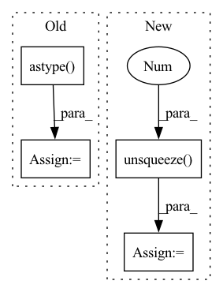

Pattern ID :37981

Before Change
results = []
batch = np.asarray(batch)
with torch.no_grad():
image_batch = batch.astype("float32")
image_batch = torch.from_numpy(image_batch).to(self.device)
facesBatch, probabilitiesBatch = self.face_detector(image_batch, return_prob=True)
for faces, probabilities in zip(facesBatch, probabilitiesBatch):
batched = []
After Change
with torch.no_grad():
image = torch.from_numpy(data.astype("float32")).to(self.device)
// Create a batch of size 1
image = image.unsqueeze(0)
// Detect faces
batch_boxes, batch_probs, _ = self.face_detector.detect(image, landmarks=True)
In pattern: SUPERPATTERN
Frequency: 4
Non-data size: 4
Instances
Fragment ID: 108712315
Project Name: jina-ai/jina-hub
Commit Name: 22993c7537903c526271697f746cc4d08c38fcce
Time: 2021-05-20
Author: 67507873+shakurshams@users.noreply.github.com
File Name: segmenters/image/FaceNetSegmenter/__init__.py
M Class Name: FaceNetSegmenter
N Class Name: FaceNetSegmenter
M Method Name: segment(2)
N Method Name: segment(2)
M Parent Class: BaseSegmenter,TorchDevice
N Parent Class: BaseSegmenter,TorchDevice
M File Name: segmenters/image/FaceNetSegmenter/__init__.py
N File Name: segmenters/image/FaceNetSegmenter/__init__.py
M Start Line: 78
M End Line: 96
N Start Line: 80
N End Line: 110
'>
Before Change
// raise ValueError("{} {} SR doesn"t match target {} SR".format(
// sampling_rate, self.sampling_rate))
// audio = torch.load(filename)
audio = torch.FloatTensor(np.load(filename).astype(np.float32))
audio = audio.unsqueeze(0)
// audio_norm = audio / self.max_wav_value
// audio_norm = audio_norm.unsqueeze(0)
// spec_filename = filename.replace(".wav", ".spec.pt")
After Change
raise ValueError("{} {} SR doesn"t match target {} SR".format(
sampling_rate, self.sampling_rate))
audio_norm = audio / self.max_wav_value
audio_norm = audio_norm.unsqueeze(0)
spec = spectrogram(audio_norm, self.filter_length, self.hop_length, self.win_length,
center=False)
spec = torch.squeeze(spec, 0)
return spec, audio_norm
'>
Fragment ID: 108712306
Project Name: babysor/realtime-voice-clone-chinese
Commit Name: 3ce874ab460658326d08c4a2dc73e4ca051d2324
Time: 2023-02-10
Author: babysor00@gmail.com
File Name: models/synthesizer/vits_dataset.py
M Class Name: VitsDataset
N Class Name: VitsDataset
M Method Name: get_audio(2)
N Method Name: get_audio(2)
M Parent Class: torch.utils.data.Dataset
N Parent Class: torch.utils.data.Dataset
M File Name: models/synthesizer/vits_dataset.py
N File Name: models/synthesizer/vits_dataset.py
M Start Line: 87
M End Line: 103
N Start Line: 87
N End Line: 96
'>
Before Change
if src_bbox.shape[0] == 0:
return np.zeros((0, 4), dtype=loc.dtype)
src_bbox = src_bbox.astype(src_bbox.dtype, copy=False)
src_width = src_bbox[:, 2] - src_bbox[:, 0]
src_height = src_bbox[:, 3] - src_bbox[:, 1]
src_ctr_x = src_bbox[:, 0] + 0.5 * src_width
After Change
if src_bbox.size()[0] == 0:
return torch.zeros((0, 4), dtype=loc.dtype)
src_width = torch.unsqueeze(src_bbox[:, 2] - src_bbox[:, 0], -1)
src_height = torch.unsqueeze(src_bbox[:, 3] - src_bbox[:, 1], -1)
src_ctr_x = torch.unsqueeze(src_bbox[:, 0], -1) + 0.5 * src_width
src_ctr_y = torch.unsqueeze(src_bbox[:, 1], -1) + 0.5 * src_height
dx = loc[:, 0::4]
dy = loc[:, 1::4]
dw = loc[:, 2::4]
dh = loc[:, 3::4]
ctr_x = dx * src_width + src_ctr_x
ctr_y = dy * src_height + src_ctr_y
w = torch.exp(dw) * src_width
h = torch.exp(dh) * src_height
'>
Fragment ID: 108712305
Project Name: bubbliiiing/faster-rcnn-pytorch
Commit Name: d456f02a402fd8cf8db1d991aa612439b3c0ffb2
Time: 2021-01-30
Author: 47347516+bubbliiiing@users.noreply.github.com
File Name: utils/utils.py
M Class Name: AnonimousClass
N Class Name: AnonimousClass
M Method Name: loc2bbox(2)
N Method Name: loc2bbox(2)
M Parent Class:
N Parent Class:
M File Name: utils/utils.py
N File Name: utils/utils.py
M Start Line: 30
M End Line: 49
N Start Line: 43
N End Line: 60